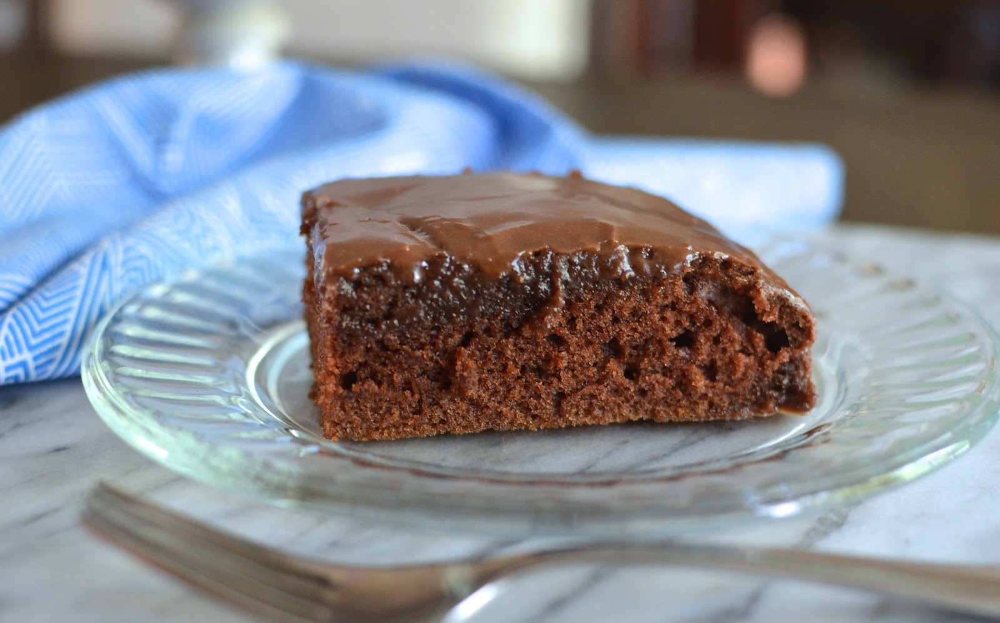

How to make Texas Sheet Cake

Description
I have made this Texas sheet cake recipe for years. My children always chose it for their birthday cake over any other, and it makes enough for a crowd. Moist and delicious. Very easy to make. Enjoy!
This Texas sheet cake is the perfect dessert for your next party, potluck, tailgate, or holiday get-together. A dense chocolate cake topped with a fudgy pourable icing, this Texas sheet cake recipe will satisfy any sweet tooth.
Ingredients
- for the cake
- All-purpose flour
- White Sugar
- Baking Sode
- Salt
- Sour Cream
- Eggs
- Butter
- Water
- Unsweetened Cocoa Powder
- For the Icing
- Milk
- Unsweetened cocoa powder
- Butter
- Confectioners' sugar
- vanilla
- (optional) walnuts
Steps
- Make the cake: Combine the dry ingredients, then beat in the sour cream and eggs. Melt butter in a saucepan. Add the water and cocoa powder, bring to a boil, and remove from the heat. Let cool slightly and stir into the sour cream mixture.
- Bake the cake: Pour the batter into a prepared cake pan and bake in the preheated oven until a toothpick comes out clean.
- Make the icing: Combine the milk, cocoa powder, and butter in a saucepan and bring to a boil. Remove from heat and stir in the remaining ingredients. Frost the warm cake.